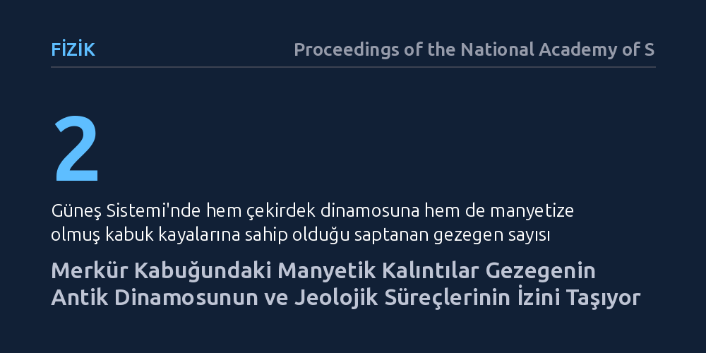

FIZIK · Proceedings of the National Academy of Sciences · 2026-09-08
Araştırmacılar, MESSENGER uzay aracının verilerini kullanarak Merkür'ün kabuk kayalarında hapsolmuş manyetik izlerin dağılımını ve kökenini inceledi. Bulgular, Merkür kabuğunun antik bir çekirdek dinamosu döneminde mıknatıslanmış olduğunu ve bu manyetizasyonun belirli jeolojik yapılarla örtüştüğünü gösterdi.
Dünya dışında hem aktif bir çekirdek dinamosuna hem de manyetik kabuk kayalarına sahip tek kayalık gezegenin Merkür olduğunu göstererek gezegenlerin evrim modellerini derinleştirir.

Güneş Sistemi'ndeki kayalık gezegenler arasında Dünya'nın güçlü bir manyetik kalkanı olduğu uzun zamandır bilinir. Ancak Merkür, boyutlarının küçüklüğüne rağmen çekirdeğinde erimiş metal hareketleriyle küresel bir manyetik alan (çekirdek dinamosu) üreten ve aynı zamanda kabuk kayalarında geçmişin manyetik izlerini taşıyan Dünya dışındaki tek kayalık gezegendir.
Kabuk manyetizması, bir gezegenin jeolojik ve termal geçmişini okumak için doğal bir kayıt cihazı işlevi görür. Erimiş kayalar soğurken içerdikleri manyetik mineraller, o anki küresel manyetik alanın yönünü ve şiddetini hapsederek milyarlarca yıl boyunca koruyabilir. Merkür'ün zayıf olan mevcut dinamosunun yanı sıra kabuk kayalarındaki bu kalıntı manyetizmanın nasıl dağıldığını anlamak, gezegenin geçmişte nasıl soğuduğunu ve manyetik motorunun ne zaman çalıştığını aydınlatmak açısından kritik önemdedir.
Merkür'ün kabuksal manyetizmasını Dünya'dan veya yüksek irtifalı yörüngelerden haritalamak neredeyse imkânsızdır; çünkü küresel manyetik alan ve Güneş rüzgârı etkileşimleri yüzeydeki zayıf kabuk sinyallerini bastırır. Bu zorluğu aşmak için araştırmacılar, NASA'nın MESSENGER uzay aracının görevinin son aylarında gerçekleştirdiği aşırı alçak irtifa geçişlerinden elde edilen manyetometre verilerini inceledi.
Bilim insanları, toplanan manyetik veri setini potansiyel alan teorisi ve filtreleme yöntemleriyle işleyerek harici plazma akımlarını ve küresel dinamo bileşenini ayıkladı. Elde edilen yerel kabuk anormallikleri, gezegenin yüksek çözünürlüklü topoğrafik haritaları, çarpma havzaları ve volkanik düzlük dağılımlarıyla üst üste bindirilerek mekânsal bir uyum analizi gerçekleştirildi.
Analizler, Merkür kabuğundaki manyetizasyonun yüzey geneline homojen yayılmadığını, belirli jeolojik yapılarla güçlü bir korelasyon içinde olduğunu ortaya koydu. Özellikle büyük çarpma havzaları ve eski volkanik düzlükler, çevrelerindeki kraterli arazilere kıyasla belirgin şekilde farklı manyetik imzalar sergilemektedir. Çarpma sırasında eriyen ve sonradan soğuyan kayaçların, o tarihte aktif olan güçlü bir çekirdek dinamosunun varlığı altında manyetize olduğu anlaşıldı.
Bu sonuçlar, Merkür'ün çekirdek dinamosunun yalnızca erken dönemde kısa süreli çalışıp durmadığını, gezegenin milyarlarca yıllık kabuk oluşumu ve lav püskürmeleri boyunca varlığını sürdürdüğünü göstermektedir. Ayrıca bazı genç jeolojik oluşumlarda manyetik sinyalin sönümlenmiş olması, dinamonun zamanla şiddet kaybettiği döneme dair doğrudan kronolojik sınırlar sunmaktadır.
Elde edilen bulgular, karasal gezegenlerin çekirdek dinamosu dinamikleri ve termal evrim modelleri açısından yeni pencereler açmaktadır. Dünya ile Merkür arasındaki benzerlikler ve farklar, Güneş Sistemi dışındaki ötegezegenlerin manyetosferik korumalarını ve iç yapılarını değerlendirirken hangi parametrelerin kritik olduğunu netleştirmektedir.
Merkür'ün kabuğundaki bu manyetik kayıtlar, gezegenin küçük kütlesine rağmen iç ısısını ve manyetik aktivitesini tahmin edilenden daha uzun süre koruyabildiğini kanıtlamaktadır. Gelecek yıllarda Merkür yörüngesine ulaşacak BepiColombo görevinin sağlayacağı daha hassas çift uzay aracı ölçümleri, bu çalışmanın ortaya koyduğu kabuksal haritayı güney yarımküreye de genişleterek küresel resmi tamamlayacaktır.